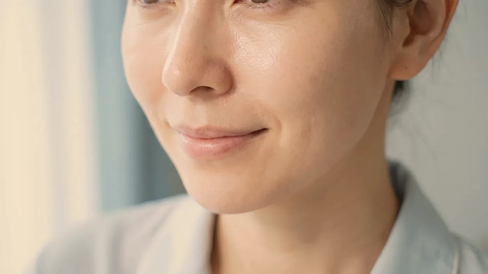

Enjeksiyon Uygulamaları · Bütüncül Planlama
Tek bölge değil, yüzün bütünü planlanır
“Sıvı yüz germe” (liquid facelift), yüzün birden çok noktasına aynı plan içinde hyalüronik asit dolgu ve gerektiğinde destekleyici uygulamalar yapılmasını anlatan halk arasındaki addır. Amaç, zamanla dağılan desteği birkaç kilit noktadan toparlayarak yüzün daha dinlenmiş görünmesine katkı sağlamaktır. Cerrahi yüz germenin yerini tutmaz; deri fazlalığı belirgin olan kişilerde cerrahi değerlendirme önerilir.

Temsilî görsel · yapay zekâ ile üretildiTanım ve sınırlar
Sıvı yüz germe nedir, cerrahi yüz germeden farkı nedir?
Yaş ilerledikçe yüzde tek bir değişiklik olmaz: kemik desteği azalır, yağ bölmeleri incelir ve aşağı doğru yer değiştirir, deri esnekliğini yitirir. Tek bir çizgiye odaklanan uygulama bu tabloyu çoğu zaman karşılamaz. Bu yaklaşımda yüz bütün olarak incelenir ve desteğin en çok azaldığı noktalar tek plan içinde, öncelik sırasıyla ele alınır.
Farklı yoğunluktaki hyalüronik asit ürünlerinin, yüzün birkaç kilit noktasına aynı değerlendirme üzerinden ve çoğunlukla birkaç seansa bölünerek yerleştirilmesidir. Plan gerektiğinde botulinum toksin, biyostimülan ya da cilt kalitesine yönelik uygulamalarla desteklenebilir. Hedef yüze yeni bir şekil vermek değil, kaybolan desteği yerine koyarak bölgeler arasındaki geçişi yumuşatmaktır; kullanılacak toplam miktar da bu hedefe göre sınırlanır.
Cerrahi yüz germenin yerini tutmaz: adında “germe” sözcüğü geçse de deri gerilmez, fazla deri alınmaz, sarkan doku ameliyattaki gibi yerinden kaldırılmaz. Belirgin deri fazlalığında uygun değildir: çene hattının altında ve boyunda katlanan deri varsa plastik cerrahi değerlendirmesi önerilir.
Tek seansta tamamlanan bir işlem değildir; toplam miktar ve seans sayısı kişiye göre belirlenir. Daha fazla ürün daha doğal görünüm demek değildir: aşırı hacim yüzü ağırlaştırır. Kalıcı değildir; kullanılan ürünler zamanla vücut tarafından yıkılır.
Şakak ve alın geçişi
Şakaklardaki çökme, yüzün üst kısmını daha köşeli ve yorgun gösterebilir. Bölgede önemli damar ve sinirler bulunduğu için derinlik seçimi titizlik ister; her planda yer almaz.
Elmacık ve orta yüz
Çoğu planın ilk basamağıdır. Orta yüzde kurulan destek, göz altı oluğunun ve nazolabial çizginin görünümünü de etkileyebilir; bu yüzden alt bölgelere geçmeden önce bu basamağın sonucunu görmek gerekir.
Göz altı oluğu
Uygun bir tablo varsa, çok küçük miktarla ve genellikle orta yüz desteğinden sonra ele alınır. Yüzün en dar toleranslı bölgesi olduğu için ayrıntıyı göz altı dolgusu bölümünde anlattık.
Nazolabial ve ağız köşesi
Burun kenarından ağız köşesine inen çizgi ve ağız köşesinden çeneye uzanan gölge, çoğunlukla üst bölgelerdeki destek kaybının yansımasıdır. Bu çizgilere doğrudan ürün vermek ancak kaynağa bakıldıktan sonra düşünülür.
Çene ucu ve jawline
Alt yüz sınırının belirsizleşmesi, çene ucunun geride kalması ve çene hattındaki çentiklenme birlikte değerlendirilir. Profil, diş kapanışı ve boyun açısı plana dâhil edilir. Bölge ayrıntısı: çene ve jawline.
Önce doğru başlık
Şikâyetinizin daha çok sarkmadan mı yoksa hacim kaybından mı kaynaklandığını hacim kaybı ve sarkma sayfası ayırt etmenize yardımcı olur. Tek bölgeye odaklı bilgi için dolgu uygulamaları, bütün yüz planı için yüz sayfasına bakabilirsiniz.
Süreç
Çok bölgeli plan adım adım nasıl kurulur?
Bütün bölgeler aynı gün ele alınmaz. Önce yüzün taşıyıcı noktaları desteklenir; ödem çekilip sonuç görüldükten sonra bir sonraki basamağa geçilir.
Taşıyıcıdan ayrıntıya
Önce orta yüz ve şakak, sonra alt yüz, en son ince ayar: her basamak, bir öncekinin sonucu görüldükten sonra planlanır.
Çubuklar oransal bir simgedir; size özel takvim muayenede netleşir.
- Öykü: önceki dolgular ve ürünleri, ilaçlar, kronik hastalıklar ve bilinen duyarlılıklar kaydedilir.
- Bütüncül yüz analizi: yüz önden, yandan ve hareket hâlinde incelenir; onay verirseniz aynı ışık ve açıyla fotoğraf kaydı alınır.
- Seçeneklerin konuşulması: deri fazlalığı belirginse cerrahi değerlendirme önerilir; uygunsa bölgelerin sırası ve seans planı yazılı hâle getirilir.
- Bilgilendirme ve onam: her seansın riskleri ve hiç uygulama yapmama seçeneği ayrıca konuşulur; yazılı onam alınır.
- Uygulama ve kontrol: her basamaktan sonra ödemin çekilmesi beklenir, sıradaki adım kontrolde yeniden değerlendirilir.
Uygulamanın yapılmadığı durumlar:
- Hyalüronik asit ürünlerine ya da yardımcı maddelerine karşı bilinen aşırı duyarlılık
- Belirgin deri fazlalığı ve sarkma — bu tabloda cerrahi değerlendirme önceliklidir
- Uygulama bölgelerinin herhangi birinde aktif enfeksiyon, iltihaplı sivilce ya da açık yara
- Daha önce uygulanmış, içeriği bilinmeyen ya da çözünmeyen ürünlerin bulunduğu bölgeler
- Gebelik ve emzirme dönemi
- Yüzün bütünüyle değişmesi gibi uygulamanın karşılayamayacağı beklentiler
Ertelenen ya da ayrıca planlanan durumlar:
- Son haftalarda geçirilen bir enfeksiyon, aşı ya da diş tedavisi
- Pıhtılaşmayı etkileyen ilaçlar ya da kanama bozukluğu
- Kontrolsüz seyreden otoimmün hastalık veya bağışıklık sistemini baskılayan ilaçlar
- Hızlı kilo kaybının sürdüğü dönem — yüz hacmi değişmeye devam ederken plan kurulmaz
- Anafilaksi öyküsü ya da daha önceki bir enjeksiyonda gelişmiş ağır reaksiyon
Önceki uygulamalarınıza ait belge ve fotoğraflar, planın hangi noktadan başlayacağını belirlemede yol gösterir.
 Temsilî görsel · yapay zekâ ile üretildi
Temsilî görsel · yapay zekâ ile üretildi“Bütün yüze bakmak, her yere ürün vermek demek değildir. Çoğu planda birkaç doğru nokta yeterlidir.”
Yüzünüzü bütün olarak değerlendirelim
Planın kapsamı ve sırası muayeneden sonra netleşir.
Randevu talebiRiskler
Çok bölgeli uygulamadan sonra neler görülebilir, ne zaman beklemeden başvurulur?
Birden çok bölge ele alındığında her bölgenin kendi riskleri geçerlidir; toplam miktar arttıkça ödem ve düzensizlik olasılığı da artabilir. Planın seanslara bölünmesinin bir nedeni de budur.
Sık görülen, kısa süreli
Birden fazla bölgede şişlik, morluk, hassasiyet ve çiğnerken ya da gülerken hissedilen gerginlik. Çoğunlukla birkaç gün ile iki hafta arasında geriler.
Daha az görülen
Asimetri, görünür kabarıklık, ürünün yer değiştirmesi, uzun süren ödem ve toplam hacmin fazla olmasına bağlı olarak yüzün ağırlaşmış görünmesi.
Geç dönemde
Haftalar ya da aylar sonra ortaya çıkan sertlik, nodül ve tekrarlayan şişlik. Bağışıklık sistemiyle ilişkili olabilir; bir enfeksiyon, aşı ya da diş tedavisinin ardından tetiklenebilir.
Uygulama sırasında ya da sonrasında beklenenden çok daha şiddetli ağrı, derinin solması ya da beyazlaması, ağ biçiminde mor renk değişimi, görmede bulanıklık veya kayıp ve göz çevresinde şiddetli ağrı gelişirse vakit kaybetmeyin. Bu bulgular ürünün bir damarı tıkamış olabileceğini düşündürür. Hemen bize ulaşın; ulaşamazsanız 112 Acil Çağrı Merkezi’ni arayın ya da en yakın hastanenin acil birimine başvurun.
Hyalüronik asit ürünlerinin gerekli durumlarda enzimle çözülmesine ilişkin bilgiyi dolgu uygulamaları sayfasının riskler bölümünde bulabilirsiniz. Bu olasılık ve izlenecek yol, uygulamadan önce sizinle ayrıca konuşulur.
Zamanlama
Plan kaç seansa yayılır, etkisi ne kadar sürer?
Seans düzeni
Toplam plan çoğunlukla birkaç seansa bölünür ve aralarında ödemin çekilmesi için birkaç hafta bırakılır. Seans sayısı baştan sabitlenmez; her kontrolde bir sonraki basamağın gerekip gerekmediğine yeniden karar verilir.
Kalıcılık
Ürünlerin dokuda kalma süresi bölgeden bölgeye değişir; sürekli hareket eden ağız çevresinde daha kısa, derin ve görece hareketsiz elmacık bölgesinde daha uzun olabilir. Etki tek seferde değil, bölge bölge ve yavaş yavaş azalır.
Sürdürme
Etki azaldığında bütün planın baştan tekrarlanması gerekmez; yüz yeniden değerlendirilir ve yalnız ihtiyaç duyulan noktalar ele alınır. Yaşla birlikte deri gevşekliği arttığında bu yaklaşımın katkısı azalır ve başka seçenekler konuşulur. Sonuçlar kişiden kişiye değişir.
Bu sayfa genel bilgilendirme amacıyla hazırlanmıştır ve kişisel bir tıbbi önerinin yerine geçmez. Çok bölgeli bir planın size uygun olup olmadığı ancak muayene ve öykünüz değerlendirildikten sonra anlaşılır. Girişimsel hiçbir işlemin sonucu önceden taahhüt edilemez; yanıt kişiden kişiye değişir. İçerik tanıtım ya da yönlendirme amacı taşımaz.
Uzm. Dr. Rahmi Cebeci, uzmanlık alanı ve Sağlık Bakanlığı onaylı medikal estetik sertifikasının tanımladığı sınırlar içinde çalışır. Cerrahi gerektiren bir tabloda enjeksiyonla çözüm aranmaz; plastik cerrahi uzmanlık dalına başvurmanız önerilir. Sınırın nereden geçtiğini neden bazı işlemleri yapmıyoruz sayfasında anlattık.
Sık gelen sorular
Merak ettiğiniz soruya dokunun, yanıtı burada açılsın
Bir adım ötesi
Yüzünüzün bütününe birlikte bakalım
Hangi noktaların önce ele alınacağını ve cerrahi değerlendirmenin gerekip gerekmediğini muayenede konuşuruz. Cevizlik Mah. Ebuzziya Cad. No:47/1, Bakırköy / İstanbul.
Metni hazırlayan ve tıbbi açıdan gözden geçiren: Uzm. Dr. Rahmi Cebeci (Aile Hekimliği Uzmanı · Medikal Estetik Sertifikalı).
Buradaki anlatım herkese yöneliktir; size özel bir teşhis ya da tedavi planı sunmaz, muayenenin yerini tutmaz. Her uygulamanın etkisi kişiye göre farklı olur.